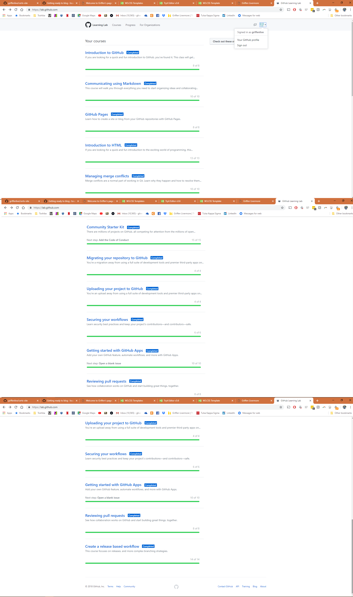
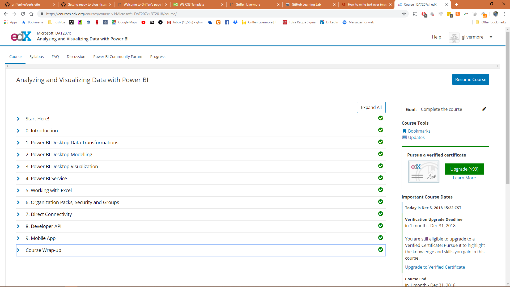
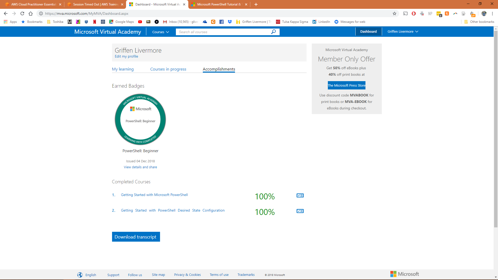
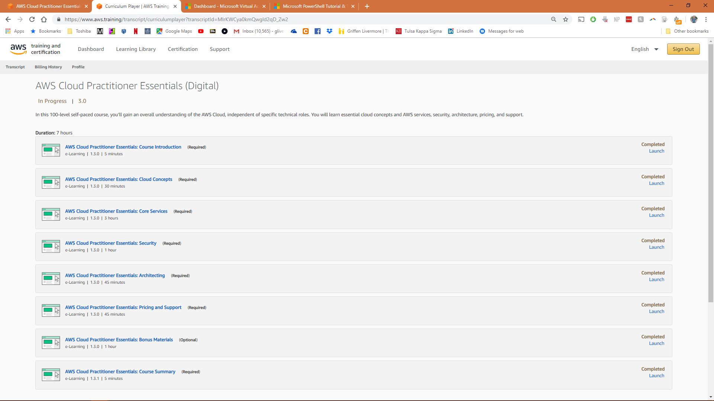

Introduction to GitHub - Teaches the user the initial ins- and - outs of GitHub. Uncluding Issue Communication, Notification Management, Creating Branches, Commits, Changes, and Pull Requests.
Communicating Using Markdown - Teahces users one of the formalities of communication within the GitHub Community, specifically creating and using effective headings, lists, images and checklists.
GitHub Pages - Teaches users host your personal, organization, and project sites on GitHub? With GitHub Pages, you can quickly create a site from your GitHub repositories—a great way to share static content related to your repository like resumes, portfolios, and project blogs.
Introduction to HTML - Teaches users how to host a free HTML website on GitHub Pages. Lesson includes learning HTML tags, headersm lists, images, and links.
Managing Merge Conflicts - Teaches users about the steps involved in fixing merge conflicts in GitHub, understanding how they come about, and what you can do to reduce their occurences.
Community Starter Kit - Teaches users about the informals standards practiced by people in the GitHub community in regards to finding and contributing to projects. Lesson includes info on metadata, file naming standards, and proper behaviors.
Uploading your project to GitHub - Teaches users how to upload personal projects to GitHub so that other users can comment, do pull requests and make commits. It also focuses on the importance of .gitignore and how to manage one's code repository.
Migrating your repository to GitHub - Teaches users how to migrate a project to GitHub using the importer tool. This is especially effective for projects previosuly being hosted on Subversion, Mercurial or another Git server.
Gettting Started with GitHub Apps - Teaches users how to utilize different GitHub apps in order to automate tasks and save time to optimize friction in a project.
Reviewing Pull Requests - Teaches users about the assorted functionalities of pull requests and how they give users the ability to comment, request changes and approve changes.
Securing your workflows - Teaches users about how they can keep their code repositories secure by enabling many of the features available in GitHub.
Create a release based workflow - Teaches users how to create a release based workflow, which allows a team to package and release software based on a specificly reached point in the project's progress.
">
GitHub Learning Labs

Power BI is quickly gaining popularity among professionals in data science as a cloud-based service that helps them easily visualize and share insights from their organizations’ data.
In this PowerBI course, I learned through a series of short, lecture-based videos, complete with demos, quizzes, and hands-on labs how to connect to and import your data, author reports using Power BI Desktop, and then publish those reports to the Power BI service. Plus, learn to create dashboards and share with business users—on the web and on mobile devices.
In the first section of PowerBI Desktop (Data Transformations), the course taught about connecting to databases, managing query groups, working with different data types, managing columns, and changing parameters to adjust data.
The second section of PowerBI Desktop (Modeling) focused mainly on managing relationships, Creating Calculated Columns, Optimizing Models for Reporting, Creating Calculated Measures, Creating and Managing Hierarchies, Using Calculated Tables, Time Intelligence, Manually Typing in a Data Table, Include and Exclude statements, Grouping, and Binning.
In the third section of PowerBI Desktop (Visualization), the course taught about Pie and Treemaps, Hierarchical Axis and Concatenatings, Filters (Including TopN), Bar Charts with Lines (Combo Charts), Analytics Panes, Clustering (and Machine Learning), Slicers, Focus Mode and See Data, Date Slicers, Map Visualizations, ESRI Maps, Tables and Matrixes, Table Styles, Scatter Charts, Waterfalls, Gauges, Cards, KPI’s, Coloring Charts, Shapes, Textboxes, Images, Gridlines, Snap to Grids, Page Layouts, Formatting, Visual Relationships, Duplicate Pages, Categories with No Data, Default Summarizations, Categorizations, Positioning, Aligning, Sorting Visuals, Custom Hierarchies, and R - Visual Integration.
In the fourth section of PowerBI (Service), the course taught about Dashboards and Services, Uploading to Power BI Services, Quick Insights, Configuring a Dashboard, Adding Textbox, Image Widgets, Featured and Favorite Dashboards, Filtering Dashboards, Dashboard Settings, Natural Language Queries, Featured Questions, Sharing a Dashboard, In-Focus Mode, Pinning a Live Page, Custom URL and Title, TV Mode and Collapse Navigations, Printing Dashboard and Exporting Data, Export to CSV and Excel, Power BI Notifications, Alerts in the Power BI Service, Personal Gateway, Publishing to Web, Admin Portals, Viewing in Windows App, Viewing in Android App, Viewing in Ipad, and Viewing in iPhone.
In the fifth section of Power BI (Working with Excel), the course taught about Importing Excel Data using Simple Table, Excel Workbook with Excel Data Models, Connecting to Excel Workbook on OneDrive for Business, Pinning Excel Tables or Visuals, and Analyzing Data in Excel.
In the sixth section of Power BI (Organization Packs, Security, and Groups) the course taught about Creating a Group, Creating a Content Pack, Using a Content Pack, Editing a Content Pack, OneDrive for Business Integration, Row Level Security, and Data Classification.
In the seventh section Power BI (Direct Connectivity) the course taught about Direct Connectivity to SQL Azure, Direct Connectivity to SQL Database, Direct Connectivity to SSAS, Using SSAS Connector, SSAS Multi-Dimensional Preview, and SAP HANA.
In the eighth section of Power BI (Developer API) the course taught about Interactive API Consoles, Registering a Client App and Embedding a Tile, Using PubNub to Push Data to a Tile, Creating Custom Visuals, Using Custom Visuals, and Power BI Embedded.
In the ninth section of Power BI (Mobile App) the course taught about Report Gallery
">
PowerBI

Getting Started with Microsoft Powershell .
This Microsoft PowerShell course is designed to teach IT professionals, admins, and help desk personnel about how to use PowerShell to improve management capabilities, automate redundant tasks, and manage the environment in scale. Through this PowerShell tutorial, I learned how PowerShell works and how to make PowerShell work for me as an IT professional. The course is taught by Jeffrey Snover, the inventor of PowerShell, and Jason Helmick, Senior Technologist at Concentrated Technology.
The first section is ‘Don't fear the shell’ - This module provides an overview of PowerShell, including how to install it, manage it, and customize it.
The second section is ‘The help system’ -This module teaches about the Help system, including updatable Help, understanding Syntax, and discoverability.
The third section is ‘The pipeline: getting connected & extending the shell’ - In this session I learned what the pipeline is and what it does. It details on exporting/ importing CSV, exporting/ importing XML, displaying information in a GUI, cmdlets. Additionally, I learned about extending the shell and how to find and add snap-ins, modules and commands.
The fourth section is ‘Objects for the Admin’ - This module reviews objects across the pipeline and how to get the information you need. I learned about sorting and selecting objects, custom properties and filtering data, and what methods to use when no cmdlet exists.
The fifth section is ‘The pipeline: deeper’ -This section reviews how the pipeline really works and the four step solution - ByValue, ByPropertyName, how to customize properties that do not match, and the Parenthetical.
The sixth section is ‘The PowerShell in the shell: remoting’ - This session provides an overview of remoting and how to enable it. You will also learn how one-to-one and one-to-many remoting works.
The seventh section is ‘Getting prepared for automation’ - In this module, I learned about automation and PowerShell security goals, execution policy, and variables. I was introduced to fun with quotes, getting and displaying input, and other output for scripts and automation.
The eighth section is ‘Introducing scripting and toolmaking’ - This module provides an overview of the new ISE and how to make commands repeatable, how to add parameters to your script, and how to document your script. It shows you how to turn your script into a tool for others and store your tools in a module.
Getting Started with PowerShell Desired State Configuration (DSC)
PowerShell Desired State Configuration (DSC) is one of the fastest-moving technologies today. But more than that, it literally transforms how IT Implementers deploy and manage on-premises resources and those extended to hybrid and other cloud environments for both Windows and Linux.
The first section is ‘Getting ready for DSC] - Gave an overview of the architecture, along with resources and requirements for DSC.
The second section is ‘Performing a Push deployment’ - Performed a push deployment configuring the LCM and first DSC configuration.
The third section is ‘Configuring Pull Servers for Deployment’ - Explore the pull server options, SMB and HTTP.
The fourth section is ‘Deploying Configurations Using a Pull Server’ – I learned to prepare an environment for pull configurations and to query diagnostic information.
The fifth section is ‘Resource roundup’ – Learned how to work with the available resources in your configurations.
The sixth section is ‘Writing better configurations’ – Learned to enhance my configurations with parameters, credentials, and more.
The seventh section is ’DSC and Linux’ – Learned to start working cross-platform, and configure Linux.
">
Powershell

AWS Practitioner Essentials (Digital)
In this 100-level self-paced course, I gained an overall understanding of the AWS Cloud, independent of specific technical roles. I learned of essential cloud concepts and AWS services, security, architecture, pricing, and support.
In the Cloud Concepts section, the course briefly teaches an introduction to the Cloud then transitions to introduce the AWS cloud.
The AWS Core Services section taught me about AWS Services and Categories, an Introduction to the AWS Global Infrastructure, Regions, Availability Groups, Edge Locations, Introduction to Amazon VPC, Introduction to Security Groups, Introduction to Amazon EC2, Introduction to EBS, Introduction to Amazon S3, Introduction to AWS Database Solutions, Amazon Aurora, Amazon RDS, and Amazon DynamoDB.
The AWS Security section taught an Introduction to AWS Security, The AWS Shared Responsibility Model, AWS Access Control and Management, AWS Security Compliance Programs, and AWS Security Resources.
The AWS Architecting section teaches an Introduction to the Well Architected Framework, Reference Architecture (Fault Tolerance and High Availability and Web Hosting).
The AWS Pricing and Support section discusses the Fundamentals of Pricing, Free tier, Pricing Details, The TCO Calculator, and AWS Support Plans.
">
Amazon Web Services